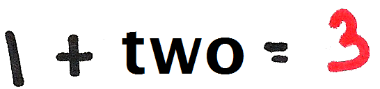
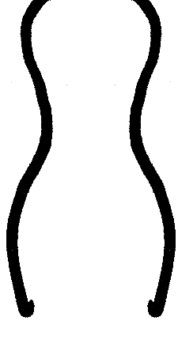

"Hey, You!" Getting the attention of the unconscious mind in web design
How is research on attention-getting and the unconscious relevant to you, if you're in the web development, IA and UX fields? Read these summaries of the most relevant and interesting thoughts from chapters 1 and 6 in Susan Weinschenk's book, "Neuro Web Design: what makes them click?"


Chapter 1: Designing web sites for persuasion & the unconscious mind
You're so smart, you have 3 brains:
- Old brain = survival
- Mid brain = emotions are processed and regulated (the root of much impulse buying)

- New brain = conscious, rational thought

Most of our decision-making and behavior is governed by unconscious processing, not the new/logical brain. Wilson (2002) notes that the unconscious influences judgments, feelings or behavior and creates shortcuts that size up our environment, interpret and initiate behavior quickly.
In other words, our unconscious mind is a huge efficient shortcut tool (that we don't control), showing us what to pay attention to consciously.
Weinschenk concludes that the most effective web sites, the ones that persuade us to engage in target behaviors, are web sites that talk to all 3 brains.
Chapter 6: It's all about YOU - speaking to the self-centered, unconscious mind
Your primitive old brain is wired to care about YOU, and it focuses on:
- physical survival (danger)
- food
- sex

Using these 3 foci, a web site can grab attention if it:
- Does something threatening.
Anything that is dangerous to you or someone else (and makes you either scared or exhilirated) puts the old and mid brains on high alert, causing that experience to be processed deeply and emotionally in our memory. When we are in an emotionally arousing situation, we pay attention and we remember it more deeply. This is not unlike the occasional newspaper adage, "If it bleeds, it leads." - Shows food.
The food must be very obvious and attractive, you can't just show people talking about food or sitting in a cafe. - Implies sex.
Even the subtlest of implications grabs attention.
If your web site is NOT about sex, food, or danger, it can also grab attention if it:
- Uses CHANGE.
We notice any change in our environment, which is why moving banner ads are so annoying: we can't ignore them or focus on anything else. Older people are even more annoyed by lots of movement/change than younger people, so be aware of your target audiences. - Addresses You.

Using the word "You" grabs the attention of our self-centered unconscious.
So, in summary, a blinking line of text saying:
"Danger! Danger! Sex-starved maniacs are attacking grocery stores near YOU!",
might catch the attention of your users, but might not be the most brilliant way to sell your website.
So be sure to use these neuro insights wisely and subtly, and always remember Google's call to "Don't be evil."
Bibliography
Weinschenk, Susan M., PhD. (2009). Neuro Web Design: what makes them click?. Berkeley: New Riders.